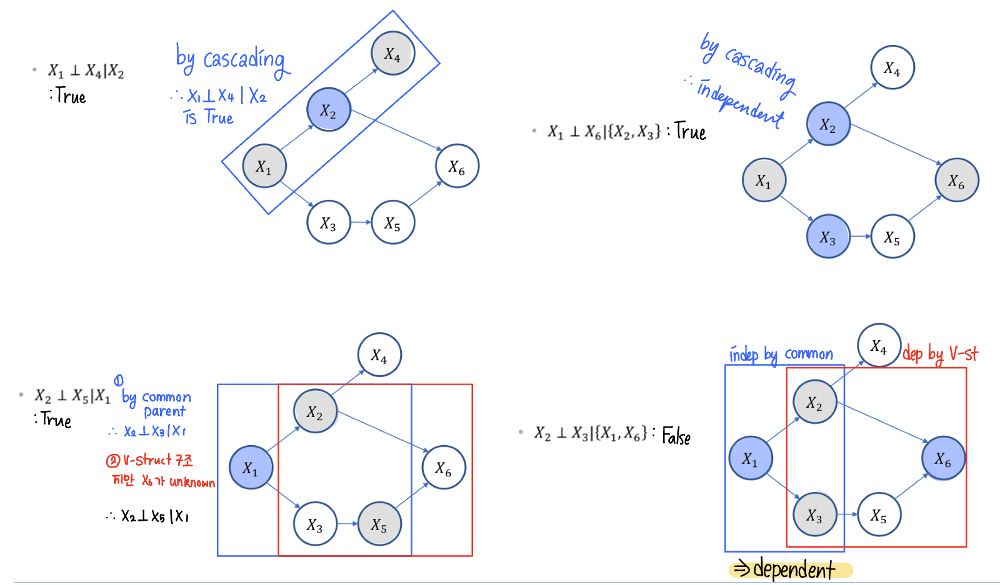

[ML] Naive Bayes Classifer
Naive Bayes Classifer
어떨 때 사용
Naive Bayes Classifer : 이론
기본 가정
현실의 데이터는 잡음이 섞여있고 다양한 케이스가 관찰된다. 하지만 이를 일반화하는 것은 어려운 일임으로, Naive Bayes Classifer는 3가지 조건을 가정해 상황을 축소한다.
- 관측에 오류가 없다.
- 동일한 X에는 항상 동일한 결과가 관측된다.
- no stochasticity in the world.
확률 모형 목표 • 구조
지도 학습 방법론인 Naive Bayes Classifer은 상황 정보 벡터 x로 y를 추론하는 모델 구축을 목표로 한다.
| Sky | Temperature | Humid | Wind | Water | Forecast | Play Tennis |
|---|---|---|---|---|---|---|
| Sunny | Warm | Low | Strong | Warm | Same | Yes |
| Sunny | Warm | High | Strong | Warm | Same | Yes |
| Rainy | Cold | High | Strong | Warm | Change | No |
| Sunny | Warm | High | Strong | Cool | Change | Yes |
위 데이터는 날씨 데이터 x와 테니스를 쳤는지를 나타내는 이진(Binary) 타겟 데이터 y로 이루어져 있다. Naive Bayes Classifer은 이 데이터를 통해 특정 날씨 조건에서 테니스를 칠지 안칠지를 예측하는 분류 모델을 구축하고자 한다. 이 관계를 수식으로 정리하면 다음과 같다.
\[P(X | Y)\]- $X$ : 날씨 상황 변수 벡터
- $Y$ : 테니스를 치는가 안치는가
입력 벡터 X는 다변수 백터임으로, 위 수식은 아래와 같이 표현할 수 있다.
\[P(X_1=x_1, X_2=x_2, X_3=x_3, X_4=x_4, X_5=x_5,X_6=x_6 | Y)\]이 모델은 모든 확률 변수 $X_i$가 서로 joint된 상황으로, 모델링하기 위해서는 모든 경우의 수를 각각 따져야 한다. 현재 데이터를 기준으로 1개의 타겟 이진 확률 변수와 6개의 이진 확률 변수 $X_i$가 존재함으로, 모델링을 위해 순수하게 계산해야 하는 상황이 $2^7$개다. 이런 모델은 모든 케이스를 여러 번 다루는 데이터가 존재해야만 하고, 상황 변수 X가 늘어날수록 적용이 어려워 한계가 존재한다.
⭐️ 조건부 독립(Conditional Independence ; CI)
위와 같은 문제를 해결하고 문제를 단순화하기 위해 Naive Bayes Classifer은 조건부 독립을 가정한다. 조건부 독립이란, C 사건이 관측되어야 A와 B 사건 사이 독립이 보장된다는 개념이다. 만약 C 사건이 관측되지(주어지지) 않았다면, A와 B 사건은 서로 독립이 아니다.
이를 수식으로 나타내면 다음과 같다.
이때 중요한 점은 사건 A와 B가 C와 각각 연관되어 있다는 점이다. 그래프로 A,B,C의 관계를 나타내면 아래와 같다.
왼쪽 그래프는 C가 관측된 상황, 오른쪽 그래프는 C가 관측된 상황이다.
예시를 통해 위 관계를 이해해보자. A를 땅이 젖음, B를 우산을 챙김, C를 비가 내림으로 가정한다. 비가 내리는지를 모를 때는 땅이 젖은 것을 보고 우산을 챙길 수 있다. 혹시나 몰라 우산을 챙겼고 땅이 젖어 있을 수도 있다. 이때 우산을 챙기는 사건과 땅이 젖어있는 사건은 서로 독립이 아니다. 하지만, 비가 내리는 것이 관측되면 땅이 젖어있던 말던 우산을 챙기고, 우산을 챙기지 않아도 땅이 젖어있다. 이때 우산을 챙기는 사건과 땅이 젖어있는 상황은 독립이다.
<-> Mariginal Independence
가장 일반적인 독립의 형태로, A,B 사건 사이의 독립을 다루며, 수식으로 나타내면 아래와 같다.
\[P(A,B) = P(A) * P(B) \\ P(A | B ) = P(A) \\ P(B | A) = P(B)\]어떤 상황에서도 서로 독립인 사건이지만, 현실에서는 거의 발생하지 않는 케이스다.
독립의 중요성
독립은 joint한 분포를 나눌 수 있기에, joint 분포에서 발생하는 모델링 어려움의 문제를 해결한다. Y가 주어졌을 때 X값들의 간단한 확률값들만으로 다변량 상황을 모델링할 수 있기 때문이다.
독립 가정 이후의 분포는 아래와 같이 쪼갤 수 있다.
\[P(X_1 = x_1, X_2 = x_2, X_3 = x_3, X_4 = x_4, X_5 = x_5, X_6 = x_6 | Y) \\ = P(X_1 = x_1 | Y) \cdot P(X_2 = x_2 | Y) \cdot P(X_3 = x_3 | Y) \cdot P(X_4 = x_4 | Y) \cdot P(X_5 = x_5 | Y) \cdot P(X_6 = x_6 | Y) \\ = \prod_{i=1}^{6} P(X_i = x_i | Y)\]모델
조건부 독립 하에서 Naive Bayes Classifer 모델은 다음과 같이 정의된다.
- 가정
- prior p $P(Y)$를 구할 수 있다.
- $X = (X_1, …, X_n)$은 Y가 주어졌을 때 서로 독립이다.
- $P(X_i \mid Y)$ 를 구할 수 있다.
-
모형
\(f^*(x) = argmax_y\prod_{i=1}^{n} P(X_i = x_i | Y=y) * P(Y=y)\)$f^*(x)$ $\in$ $Y$
예제 풀이
| Sky | Temperature | Humid | Wind | Water | Forecast | Play Tennis |
|---|---|---|---|---|---|---|
| Sunny | Warm | Low | Strong | Warm | Same | Yes |
| Sunny | Warm | High | Strong | Warm | Same | Yes |
| Rainy | Cold | High | Strong | Warm | Change | No |
| Sunny | Warm | High | Strong | Cool | Change | Yes |
모델 빌딩
- prior P 계산
- $P(X_i \mid Y)$ 계산
- Q. P(Rainy, Warm, Low Humid $\mid$ play Tennis) = ?
-
비오는 날 테니스를 치는 사건은 관측되지 않았다. 따라서 이를 확률로 나타내면 P(Rainy $\mid$ play Tennis) = 0으로, 문제의 확률 P(Rainy, Warm, Low Humid $\mid$ play Tennis)이 나머지 조건과 무관하게 0이 나오게 만든다. 이 문제는 너무 적은 데이터에서 모델링을 진행하기 때문에 발생한 것으로, 방지하기 위해 smoothing을 적용한다.
평활화 (smoothing)
평활화는 데이터가 부족한 상황뿐만 아니라 데이터 오버피팅 방지에도 효과적이다. Naive Bayes Classifer에서 일반적으로 많이 사용하는 평활화 방법론은 Laplace smoothing으로, 분모에 $X_i$의 종류를 더하고 분자에 1을 더해 평활화를 진행한다.
\[P(X_i \mid Y) = \frac{C(X_i , Y) + 1}{C(Y=y) + NumCategory(X_i)}\]라플라스 평활화에 사용되는 값은 MAP와 관련있다.
MLE & MAP
>> MLE
우도(likelihood)는 주어진 데이터 $D$ 에서, 어떤 파라미터 $\theta$가 가장 그럴듯한지를 측정하는 함수다.
\[P(D \mid \theta)\]수식 상으로는 확률처럼 보이지만, 우도와 확률은 다른 개념이다. 확률은 [0,1] 범위 안에서 엄밀하게 정의되지만 우도는 [0,1] 이외의 범위 값도 가질 수 있다. 따라서 우도는 확률이라 말할 수 없다.
MLE (Maximum Likelihood Estimator)는 최대 우도값을 갖는 $\theta$를 의미하고, 수식으로 나타내면 아래와 같다.
\[\hat{\theta}_{MLE} = \underset{\theta}{\arg\max} P(D \mid \theta) = \underset{\theta}{\arg\max} \log P(D \mid \theta)\]MLE는 관측치를 기반으로 최적의 파라미터를 추론하는 방법론으로 수리통계의 핵심적인 개념이다.
- 예제
동전 던지기 문제에서 $\theta$를 앞면이 나올 확률로 가정한다.
관측값은 (앞면, 뒷면) = (m,n)
이항분포 상황에서 mle는 $\frac{m}{m+n}$다.
mle는 다량의 데이터에서 믿을 만한 파라미터를 내놓지만, 적은 데이터에서는 신뢰도가 낮은 파라미터를 내놓는다. 이런 mle의 단점을 베이지안적 방법으로 극복해낸 것이 MAP다.
>> MAP
MAP(Maximum A Posteriori)는 mle에 사전 정보를 포함해 그럴듯한 파라미터 $\theta$를 측정하는 함수다. map는 사전 확률을 포함함으로써 적은 데이터에서도 일반화된 파라미터를 추측할 수 있다.
\[\hat{\theta}_{MAP} = \underset{\theta}{\arg\max} P(\theta \mid D) = \underset{\theta}{\arg\max} P(D \mid \theta) P(\theta)\]- 예제
prior prob으로 베타 분포를 사용하는 이유는 베타 분포의 성질 때문이다. 베타 분포는 [0,1] 사이에서 정의되기 때문에 사용성이 높고, 이항분포와 베타 분포가 곱해졌을 때 다시 베타 분포를 따르기 때문이다(Closed-Form).
(+) 사전 분포와 사후 분포가 같은 분포를 갖을 때, 사전 분포는 사후 분포의 conjugate prior라고 부른다.
다시 평활화로,
라플라스 평활화는 MAP의 꼴과 유사하다.
- 라플라스 평활화
- MAP
두 식을 비교해보았을 때, 라플라스 평활화는 사전분포가 Beta( $\theta \mid$ a=2,b=2 )인 MAP와 동일하다.
ㄴ Beta(2,2) 분포 ; 종형 분포를 가진다.
따라서 라플라스 평활화는 Y의 발생 확률의 기댓값이 0.5일 것이라 가정한 평활화로 해석할 수 있다. 만약 사전 확률 분포를 다르게 정의하고 싶다면, a&b 값을 변화시켜서 다른 평활화 함수를 이용하면 된다.
베이지안 네트워크 (Bayesian Network)
베이지안 네트워크는 그래프 구조로 여러 조건부 상황을 모델링한 것으로, Full joint distribution를 쉽게 얻을 수 있게 해준다. 네트워크 구조는 인과 관계를 표현하고, 데이터 생성 과정을 설명하며, 도메인 지식을 기반으로 설계할 때 활용된다. 또한 그래프는 단방향(direct) 비순환(Acyclic) 구조를 가진다.
Typical local structures
순서대로 1. Common Parent 2. V-structure 3. Cascading 구조다.
Common Parent는 공통 부모 X를 갖는 Y,Z가 존재한다. 부모 노드 X가 주어졌고, Y,Z는 서로 독립이다. : ($Y \perp Z \mid X$)
V-structure는 X에게 두 개의 부모 Y,Z가 존재한다. X가 관측되면, 부모 노드 Y,Z는 서로 독립이 아니다. : ~($Y \perp Z \mid X$)
Cascading은 X의 부모가 Y, 자식이 Z인 구조다. X가 관측되면, 부모 노드 Y와 자식 노드 Z는 서로 독립이다. : ($Y \perp Z \mid X$)
위 세 개 상황에서 Y가 주어졌을 때 X와 Z는 서로 D-seperation 관계라 정의한다.
Markov Blanket
확률 그래프 모델(Probabilistic Graphical Model, PGM) 에서 특정 노드의 상태를 결정하는 최소한의 집합이다. 특정 노드 $x_i$의 확률이 주어지지 않았을 때, Markov Blanket 집합을 통해 P($x_i$)를 추론할 수 있어 유용하다.
$x_i$의 상태(확률)를 알기 위해서는 $x_i$의 부모, 자식, 그리고 자식의 공통 부모 정보가 필요하다.
MB($x_i$) = { parent, child, child’s common parent }
Bayes ball Thm
베이즈 볼 이론은 가상을 공을 굴려 두 노드 간의 관계가 독립인지, 연관인지 판별하는 방법론이다. X와 Z가 서로 독립인지 궁금해 X에서 공을 굴렸을 때 공이 막히는 곳 없이 굴러가 Z에 도착한다면 연관, 막혀 도착하지 못한다면 독립이다.
예제

베이지안 네트워크 분해
베이지안 네트워크로 정의된 full joint distribution P(X)은 부모-자식 간의 관계로 나누어 나타낼 수 있다.
\[P(X) = \prod_j P \left( X_j \mid \operatorname{parent}(X_j) \right)\]